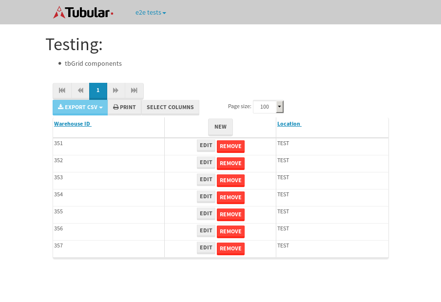

tbColumn.Grid Sorting - 175.858sTests: 5Skipped: 0Failures: 3 should sort data in ascending order then on descending order when sorting by Order Id column - 43.962sExpected '1' to be '500'.✗Expected '20' to be '481'.✗Tests passed: 50.00%should order data in ascending order when click-sorting an unsorted text column - 23.027sTests passed: 100.00%should order data in descending order when click-sorting an ascending-sorted text column - 42.908sExpected 'Advanced Technology Systems' to be 'Vesta'.✗Tests passed: 0.00%should order data in ascending order when click-sorting an unsorted date column - 22.949sTests passed: 100.00%should order data in descending order when click-sorting twice an unsorted date column - 43.004sExpected '12/30/2015' to match /1\/01\/2016/.✗Tests passed: 0.00%
tbEmptyForm - 4.412sTests: 3Skipped: 0Failures: 0 should have an empty required field - 2.831sTests passed: 100.00%should not be able to click on save - 0.025sTests passed: 100.00%should load default value for numeric field - 0.024sTests passed: 100.00%
Tubular Filters.tbColumnFilter - 97.744sTests: 12Skipped: 0Failures: 0 should cancel filtering when clicking outside filter-popover - 7.977sTests passed: 100.00%should disable Value text-input for "None" filter - 5.751sTests passed: 100.00%should disable apply button for "None" filter - 5.836sTests passed: 100.00%should decorate popover button when showing data is being filtered for its column - 11.06sTests passed: 100.00%should correctly filter data for the "Equals" filtering option - 7.208sTests passed: 100.00%should correctly filter data for the "Not Equals" filtering option - 7.929sTests passed: 100.00%should correctly filter data for the "Contains" filtering option - 7.957sTests passed: 100.00%should correctly filter data for the "Not Contains" filtering option - 7.319sTests passed: 100.00%should correctly filter data for the "Starts With" filtering option - 6.863sTests passed: 100.00%should correctly filter data for the "Not Starts With" filtering option - 6.193sTests passed: 100.00%should correctly filter data for the "Ends With" filtering option - 6.02sTests passed: 100.00%should correctly filter data for the "Not Ends With" filtering option - 6.296sTests passed: 100.00%
Tubular Filters.tbColumnDateTimeFilter - 124.227sTests: 12Skipped: 0Failures: 0 should cancel filtering when clicking outside filter-popover - 6.367sTests passed: 100.00%should disable Value text-input for "None" filter - 5.612sTests passed: 100.00%should disable apply button for "None" filter - 5.763sTests passed: 100.00%should clear filtering when clicking on Clean button - 16.486sTests passed: 100.00%should decorate popover button when showing data is being filtered for its column - 10.994sTests passed: 100.00%should correctly filter data for the "Equals" filtering option - 6.815sTests passed: 100.00%should correctly filter data for the "Not Equals" filtering option - 6.398sTests passed: 100.00%should correctly filter data for the "Between" filtering option - 11.09sTests passed: 100.00%should correctly filter data for the "Greater-or-equal" filtering option - 11.046sTests passed: 100.00%should correctly filter data for the "Greater" filtering option - 10.978sTests passed: 100.00%should correctly filter data for the "Less-or-equal" filtering option - 10.675sTests passed: 100.00%should correctly filter data for the "Less" filtering option - 10.75sTests passed: 100.00%
Tubular Filters.tbColumnOptionsFilter - 76.904sTests: 3Skipped: 0Failures: 0 should cancel filtering when clicking outside filter-popover - 7.11sTests passed: 100.00%should decorate popover button when showing data is being filtered for its column - 10.61sTests passed: 100.00%should filter column-elements in accordance to the selected filter when selecting a single option - 47.728sTests passed: 100.00%
Tubular Filters.tbTextSearch - 44.254sTests: 5Skipped: 0Failures: 0 min-chars is not set - 0.084sTests passed: 100.00%should filter data in searchable-column customer name to matching inputted text, starting from 3 characters - 5.883sTests passed: 100.00%should filter data in searchable-column shipper city to matching inputted text, starting from 3 characters - 11.046sTests passed: 100.00%should show clear button when there is inputted text only - 5.701sTests passed: 100.00%should clear filtering when clicking clear button - 15.495sTests passed: 100.00%
tbForm related components.tbCheckboxField - 7.751sTests: 2Skipped: 0Failures: 0 should save changes on "SAVE" - 3.538sTests passed: 100.00%should discard changes on "CANCEL" - 2.251sTests passed: 100.00%
tbForm related components.tbDropDownEditor - 7.241sTests: 5Skipped: 0Failures: 0 should set initial input value to the value of "value" attribute when defined - 0.773sTests passed: 100.00%should show the component name value in a label field when "showLabel" attribute is true - 1.234sTests passed: 100.00%should show a help field equal to this attribute, is present - 0.777sTests passed: 100.00%should submit modifications to item/server when clicking form "Save" - 2.666sTests passed: 100.00%should NOT submit modifications to item/server when clicking form "Cancel" - 1.18sTests passed: 100.00%
tbForm related components.tbTextArea - 12.023sTests: 7Skipped: 0Failures: 0 should set initial input value to the value of "value" attribute when defined - 0.937sTests passed: 100.00%should be invalidated when the number of chars is not in the range of "min" and "max" attributes - 1.387sTests passed: 100.00%should show the component name value in a label field when "showLabel" attribute is true - 1.351sTests passed: 100.00%should show a help field equal to this attribute, is present - 0.757sTests passed: 100.00%should require the field when the attribute "required" is true - 0.942sTests passed: 100.00%should submit modifications to item/server when clicking form "Save" - 4.71sTests passed: 100.00%should NOT submit modifications to item/server when clicking form "Cancel" - 1.177sTests passed: 100.00%
tbForm related components.tbDateEditor - 8.815sTests: 6Skipped: 0Failures: 0 should set initial date value to the value of "value" attribute when defined - 0.784sTests passed: 100.00%should be invalidated when the date is not in the range of "min" and "max" attributes - 1.471sTests passed: 100.00%should show the component name value in a label field when "showLabel" attribute is true - 0.777sTests passed: 100.00%should show a help field equal to this attribute, is present - 0.716sTests passed: 100.00%should submit modifications to item/server when clicking form "Save" - 1.813sTests passed: 100.00%should NOT submit modifications to item/server when clicking form "Cancel" - 2.183sTests passed: 100.00%
tbForm related components.tbTypeaheadEditor - 15.822sTests: 7Skipped: 0Failures: 0 should show an options list when there is an API-info/component entered-data - 2.506sTests passed: 100.00%should select the option clicked - 1.917sTests passed: 100.00%should show a "delete" button when an option/match is selected, and delete the option if button is clicked - 2.146sTests passed: 100.00%should show a label value equal to the component name when "showLabel" attribute is true - 1.025sTests passed: 100.00%should require a value when "require" attribute is true - 1.69sTests passed: 100.00%should submit modifications to item/server when clicking form "Save" - 3.522sTests passed: 100.00%should NOT submit modifications to item/server when clicking form "Cancel" - 1.49sTests passed: 100.00%
tbForm related components.tbSimpleEditor - 10.578sTests: 9Skipped: 0Failures: 0 should set initial input value to the value of "value" attribute when defined - 0.636sTests passed: 100.00%should be invalidated when the number of chars is not in the range of "min" and "max" attributes - 1.152sTests passed: 100.00%should show the component name value in a label field when "showLabel" attribute is true - 0.672sTests passed: 100.00%should set input placeholder to the value of "placeholder" attribute - 0.881sTests passed: 100.00%should validate the control using the "regex" attribute, if present - 1.077sTests passed: 100.00%should show a help field equal to this attribute, is present - 0.778sTests passed: 100.00%should require the field when the attribute "required" is true - 0.893sTests passed: 100.00%should submit modifications to item/server when clicking form "Save" - 2.887sTests passed: 100.00%should NOT submit modifications to item/server when clicking form "Cancel" - 1.012sTests passed: 100.00%
tbForm related components.tbNumericEditor - 10.222sTests: 7Skipped: 0Failures: 0 should set initial component value to the value of "value" attribute when defined - 0.869sTests passed: 100.00%should be invalidated when the entered number is not in the range of "min" and "max" attributes - 1.256sTests passed: 100.00%should show the component name value in a label field when "showLabel" attribute is true - 0.87sTests passed: 100.00%should show a help field equal to this attribute, is present - 0.78sTests passed: 100.00%should require the field when the attribute "required" is true - 0.979sTests passed: 100.00%should submit modifications to item/server when clicking form "Save" - 3.515sTests passed: 100.00%should NOT submit modifications to item/server when clicking form "Cancel" - 1.212sTests passed: 100.00%
tbForm Connection Error NoModelKey - 2.014sTests: 1Skipped: 0Failures: 0 tbForm connection error functionality - 0.004sTests passed: 100.00%
tbForm Connection Error NoServerUrl - 2.099sTests: 1Skipped: 0Failures: 0 tbForm connection error functionality - 0.003sTests passed: 100.00%
tbGridComponents - 28.972sTests: 6Skipped: 0Failures: 1 should add item with newRow method - 4.223sTests passed: 100.00%should add item with newRow method and cancel action - 0.279sTests passed: 100.00%should update item with tbSaveButton - 1.488sTests passed: 100.00%should NOT update item on cancel Update action - 0.473sTests passed: 100.00%should remove item with tbRemoveButton - 20.416sExpected 7 not to be 7, 'should remove the row from the table'.✗Tests passed: 50.00%should NOT remove item on cancel Remove action - 0.729sTests passed: 100.00%
tbGridPager.navigation buttons - 3.172sTests: 1Skipped: 0Failures: 0 should perform no action when clicking on the numbered navigation button corresponding to the current-showing results page - 0.714sTests passed: 100.00%
tbGridPager.navigation buttons.first/non-last results page related functionality - 1.159sTests: 2Skipped: 0Failures: 0 should disable "first" and "previous" navigation buttons when in first results page - 0.129sTests passed: 100.00%should enable "last" and "next" navigation buttons when in a results page other than last - 1.03sTests passed: 100.00%
tbGridPager.navigation buttons.last/non-first results page related functionality - 1.299sTests: 2Skipped: 0Failures: 0 should disable "last" and "next" navigation buttons when in last results page - 0.672sTests passed: 100.00%should enable "first" and "previous" navigation buttons when in a results page other than first - 0.627sTests passed: 100.00%
tbGridPager.page navigation - 4.899sTests: 5Skipped: 0Failures: 0 should go to next results page when clicking on next navigation button - 1.172sTests passed: 100.00%should go to previous results page when clicking on previous navigation button - 1.449sTests passed: 100.00%should go to last results page when clicking on last navigation button - 0.671sTests passed: 100.00%should go to first results page when clicking on first navigation button - 0.92sTests passed: 100.00%should go to corresponding results page when clicking on a numbered navigation button - 0.686sTests passed: 100.00%
tbGridPagerInfo - 5.207sTests: 2Skipped: 0Failures: 0 should show text in accordance to numbered of filter rows and current results-page - 2.83sTests passed: 100.00%should show count in footer - 0.024sTests passed: 100.00%
tbPageSizeSelctor - 16.43sTests: 4Skipped: 0Failures: 0 should filter up to 10 data rows per page when selecting a page size of "10" - 4.722sTests passed: 100.00%should filter up to 20 data rows per page when selecting a page size of "20" - 3.644sTests passed: 100.00%should filter up to 50 data rows per page when selecting a page size of "50" - 2.967sTests passed: 100.00%should filter up to 100 data rows per page when selecting a page size of "100" - 3.608sTests passed: 100.00%
tbSingleForm - 12.968sTests: 8Skipped: 1Failures: 1 should load correct info - 0.001s***Skipped***Tests passed: 0%should change customer name - 1.656sTests passed: 100.00%should save it - 1.899sExpected '' to be 'Saved'.✗Tests passed: 50.00%should clear the inputs - 1.823sTests passed: 100.00%should update - 2.047sTests passed: 100.00%should reset editor - 1.831sTests passed: 100.00%should not save if not Changes - 1.849sTests passed: 100.00%should not be able to click on save - 1.86sTests passed: 100.00%


{kind=link}